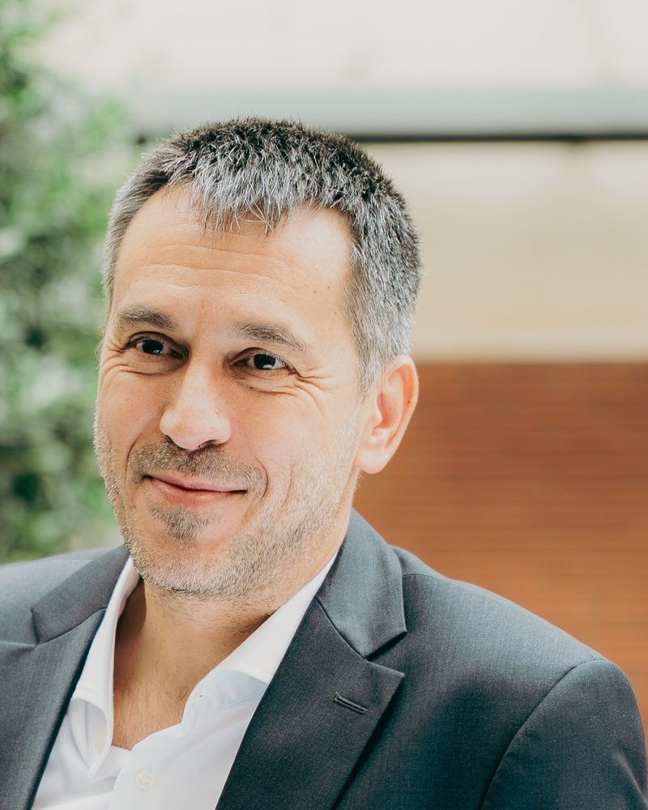
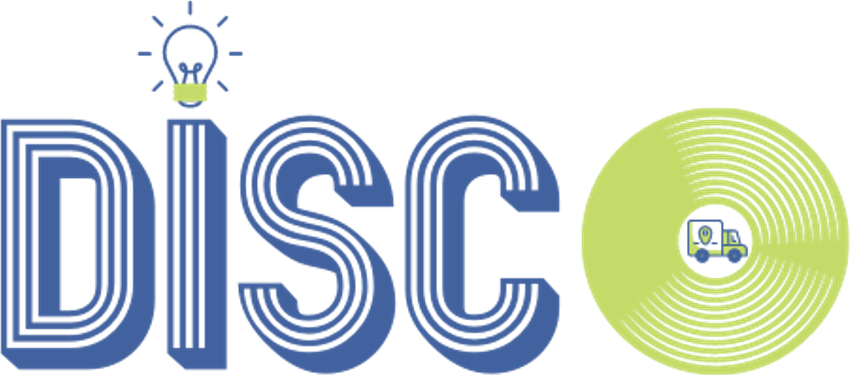
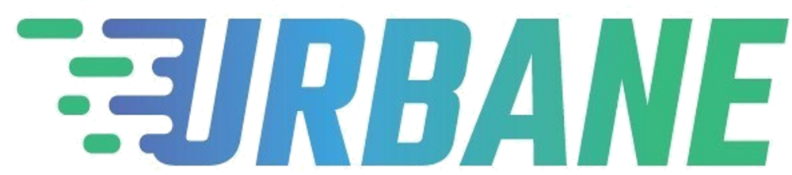
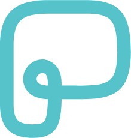
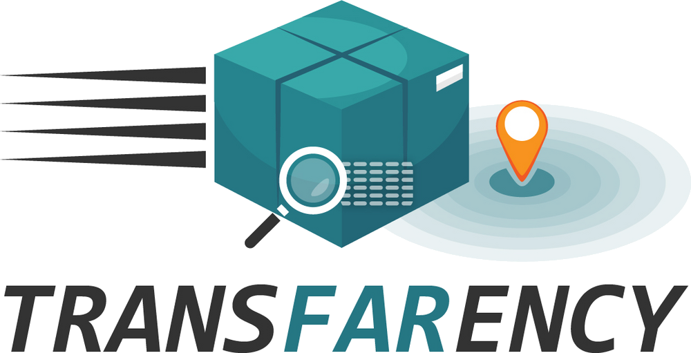
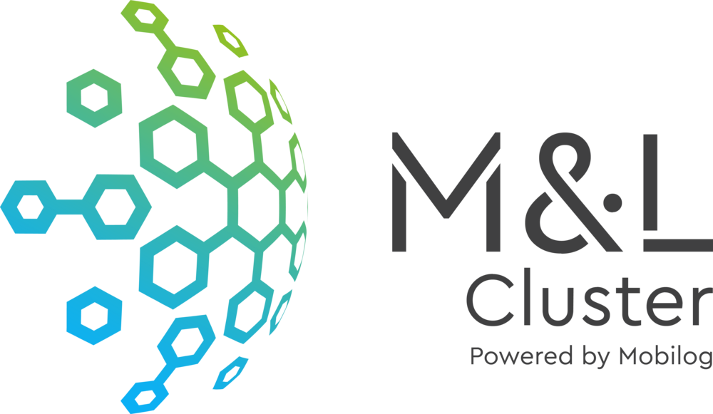

EU-funded research & innovation
Horizon Europe and national projects: shaping proposals, coordinating pilots and partners, and delivering on time and in budget — with claims a courier operator can credibly stand behind.
Athens, GR · Innovation · Last-mile logistics
Innovation Management and AI Ambassador at ACS Courier & Postal Services. I connect new logistics models — out-of-home delivery, locker networks, urban logistics pilots — with real operations.
My route here went through more than a decade in medical-sector sales and product management, then ACS corporate sales. So I look at every pilot from two sides at once: does it work operationally, and does it create value for the customer and the business. Outside the day job: agentic AI, Python, blockchain, Web3 and IoT.

Focus areas
Horizon Europe and national projects: shaping proposals, coordinating pilots and partners, and delivering on time and in budget — with claims a courier operator can credibly stand behind.
As ACS's AI Ambassador, driving the adoption of AI across the organisation — internal tools, agentic workflows, and hands-on prototypes that bring AI into everyday logistics and innovation work.
The hard part of innovation: moving ideas out of the demo phase and into daily operations, working with startups, universities, research centres, technology providers and public authorities.
Strategy and operations for locker-based delivery: network design, customer adoption, and routing parcels to where people actually want them.
Piloting new delivery models in dense city environments — micro-hubs, consolidated flows, low-emission last mile — with Athens as the main testbed.
Project portfolio
Horizon Europe & Horizon 2020
 GREEN-LOG · Athens
GREEN-LOG · AthensThe Athens Living Lab brings partners together around micro-consolidation, lockers and shared electric delivery. ACS leads the Living Lab and connects the pilot plan with daily operations.

DISCO · ThessalonikiAn ACS branch relocation and locker installation at TIF-Helexpo, explored with city and research partners.
 TRACE · Greece
TRACE · GreeceTRACE is about multimodality in logistics operations. Three Greek pilots tested long-haul transport of roll cages by train instead of truck, the use of other available vehicles to stay resilient during unexpected events, and an autonomous-vehicle delivery on the NTUA campus, ACS’s first.

URBANE · ThessalonikiIn the Thessaloniki Living Lab, delivery data and a city digital twin supported the design and roll-out of an optimised ACS parcel locker network, a base for future multi-operator collaboration.

PANACEA · GreeceHealth-based tools that assess commercial drivers’ fitness to drive, tested in pilots in Greece, Spain and Sweden with professional drivers and courier riders.
Greek & EU co-funded

TRANSFARENCY · GreeceBlockchain functions for parcel track-and-trace, recipient changes and temperature monitoring of sensitive packages.

INCOMPOSE · M&L ClusterAs a member of the Smart Mobility & Logistics innovation cluster, ACS took part in co-developing ten products for current challenges in moving people and goods.
Funded by the Greek General Secretariat for Research and Innovation (GSRI). Started in October 2026; details and project website to follow.
Role across projects: ideation and pilot design, proposal coordination, consortium and partner management, internal F&A and operational coordination, and dissemination.
Background
Leading the adoption of AI across ACS: internal tools and agentic workflows, hands-on experimentation, and helping teams build AI into their daily work.
Funding opportunity exploration, pilot design, proposal coordination and management of granted projects — partners, consortium meetings, deliverables, on time and in budget. Plus ecosystem building with startups, academia, research centres and public authorities.
Opening up the company's innovation process in close collaboration with iQnovus, the Quest Group innovation centre — building the mechanisms and culture for new technologies, alongside first Horizon EU participations.
Public and private tenders, new business, and ACS special projects: biological substances, blood samples and pharma deliveries (ACS Medi Express).
Over a decade across medical device companies (Vamvas Medicals, 4MED, Oxymed, MEDIWAY and others): product management, sales, training teams and supporting surgeons — mainly surgical and laparoscopic products.
PE teacher in primary schools (Rhodes, Athens) and fitness instructor/manager — where the sports science foundation comes from.
Credentials
Short courses · Anthropic Academy